定义：设{Xn}为一随机变量序列，X为一随机变量，如果对任意的ε＞0有P（|Xn－x|≥ε）→0（n→∞），则称序列{Xn}依概率收敛于x，记作 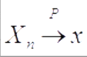 或者说，绝对偏差|Xn－x|小于任一给定量的可能性将随着n增大而愈来愈接近于1，即等价于P（|Xn－x|＜ε）→1（n→∞）．特别当x为退化分布时，即P（X－c）＝1，则称序列{Xn}依概率收敛于C．
1）按分布收敛
设随机变量X，X1，X2，…的分布函数分别为F（X），F1（X），F2（X），…．若对F（x）的任一连续点x，都有
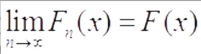
则称{Fn（x）}弱收敛于F（x），记作
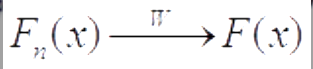
也称{Xn}按分布收敛于x，记作
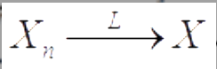
2)
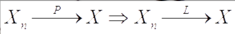
说明依概率收敛是一种比按分布收敛更强的收敛性．
注意：以上定理的逆命题不成立，即由按分布收敛无法推出依概率收敛，一般按分布收敛与依概率收敛是不等价的．但当极限随机变量为常数（服从退化分布）时，按分布收敛与依概率收敛是等价的．
定义
设X是一个随机变量，称φ（t）＝E（eitX），－∞＜t＜∞，为X的特征函数．
因为|eitX|＝1，所以E（eitX）总是存在的，即任意随机变量的特征函数总是存在的．
当离散随机变量X的分布列为pk＝P（X＝xk），k＝1，2，…，则X的特征函数为
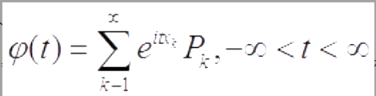
当连续随机变X的密度函数为p（x），则X的特征函数为
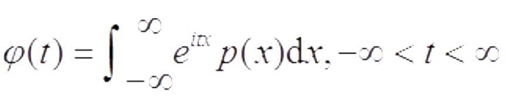
注意：随机变量的数学期望、方差及各阶矩都一样，特征函数只依赖于随机变量的分布，分布相同则特征函数也相同，所以我们也常称为某分布的特征函数．
特征函数的性质
特征函数的一些性质如下，其中φx（t）表示X的特征函数，其他类似．
（1）|φ（t）|≤φ（0）＝1．
（2）φ（－t）＝φ'（t），其中φ'（t）表示φ（t）的共轭．
（3）若y＝aX＋b，其中a，b是常数，则φY（t）＝eibtφX（at）．
（4）独立随机变量和的特征函数为每个随机变量的特征函数的积．即设X与Y相互独立，则X＋Y的特征函数为：φX＋Y（t）＝φx（t）φY（t）．
（5）若E（Xl）存在，则X的特征函数φ（t）可l次求导，且对1≤k≤l，有φ（k）（0）＝ikE（Xk）．该式提供了一条求随机变量的各阶矩的途径，特别可用于下式去求数学期望和方差：E（X）＝φ′（0）/i，Var（X）＝－φ″（0）＋[φ′（0）]2
（6）一致连续性：随机变量X的特征函数φ（t）在（－∞，∞）上一致连续．
（7）非负定性：随机变量x的特征函数φ（t）是非负定的，即对任意正整数n及n个实数t0，t1，…，tn和n个复数z0，z1，…，zn，有
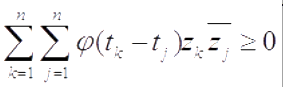
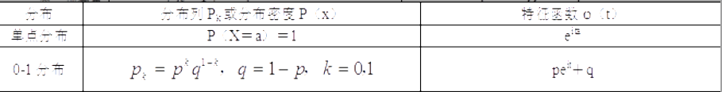 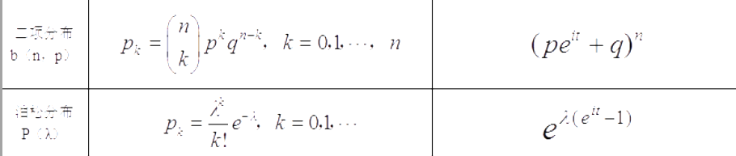 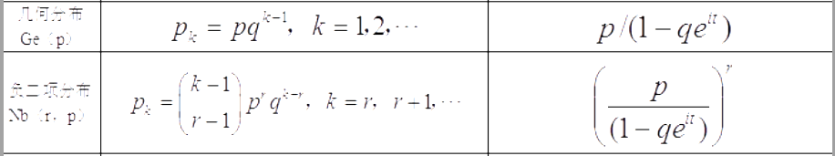 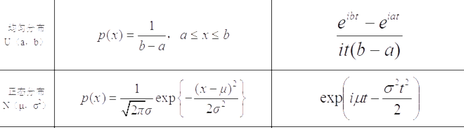 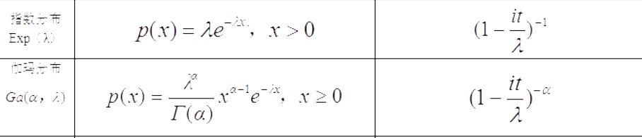 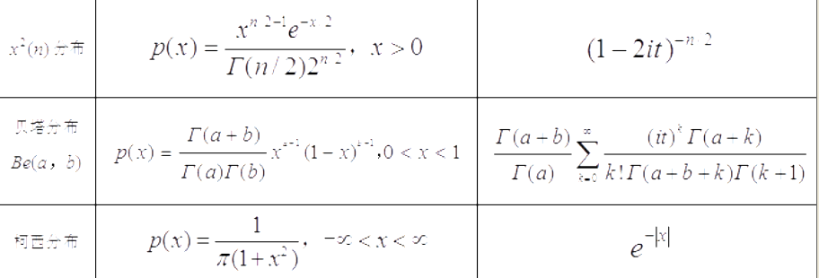
1)伯努利大数定律
设Sn为n重伯努利试验中事件A发生的次数，P为每次试验中A出现的概率，则对任意的ε＞0，有
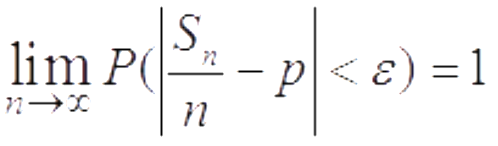
伯努利大数定律说明：随着n的增大，事件A发生的频率Sn/n与其频率P的偏差|Sn/n－p|大于预先给定的精度ε的可能性愈来愈小，这就是频率稳定于概率的含义．
2)切比雪夫大数定律
设{Xn}为一列两两不相关的随机变量序列，若每个Xi的方差存在，且有共同的上界，即Var（Xi）≤c，i＝1，2，…，则{Xn}服从大数定律，即对任意的ε＞0，
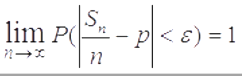
成立．
3)马尔可夫大数定律
对随机变量序列{Xn}，若
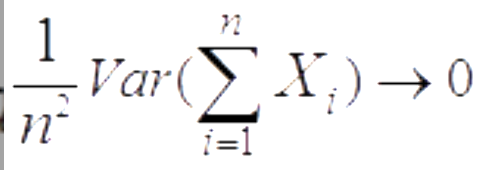
成立，则{Xn}服从大数定律，即对任意的ε＞0，有
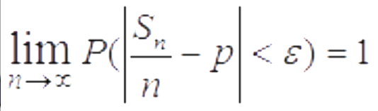
成立．
4)辛钦大数定律
设{Xn}为一独立同分布的随机变量序列，若Xi的数学期望存在，则{Xn}服从大数定律，即对任意的ε＞0，
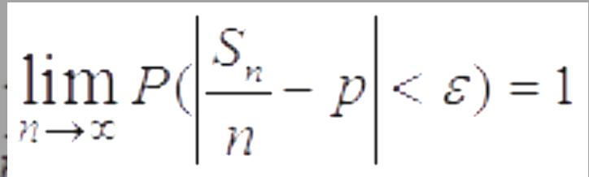
成立．
辛钦大数定律可归纳出如果{Xn}为一独立同分布的随机变量序列，且E{|Xi|k}存在，其中k为正整数，则{Xnk}服从大数定律，也就是可以将
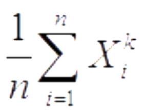
作为E（Xik）的近似值．
1)林德伯格-莱维中心极限定理（独立同分布）
设{Xn}是独立同分布的随机变量序列，且E（Xi）＝μ，Var（Xi）＝σ2＞0存在，若记
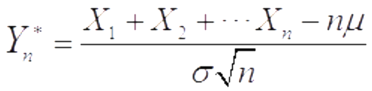
则对任意实数y，有
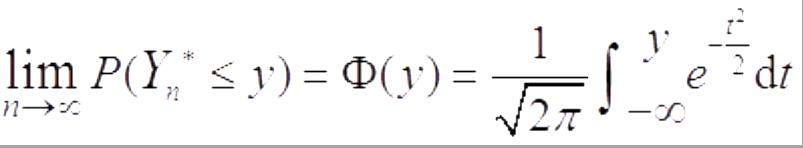
2)棣莫弗-拉普拉斯中心极限定理
设n重伯努利试验中，事件A在每次试验中出现的概率为p（0＜p＜1），记Sn为n次试验中事件A出现的次数，且记
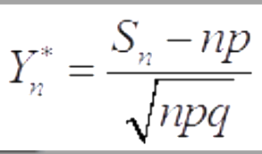
则对任意实数Y，有
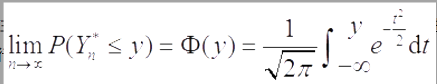
注意：此定理是专门针对二项分布的，有时为了提高计算精度会进行适当的修正．
在该定理的应用中，若记β＝Φ（y），则由棣莫弗一拉普拉斯中心极限定理给出的近似式P（Yn*≤y）≈Φ（y）＝β，可用来解决三类计算问题：①已知n，y，求β；②已知n，β，求Y；③已知y，β，求n．
3)林德伯格中心极限定理（独立不同分布）
设独立随机变量序列{Xn}满足只要对任意的τ＞0，有
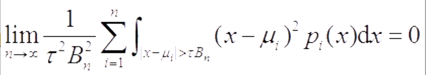
则对任意的x，有
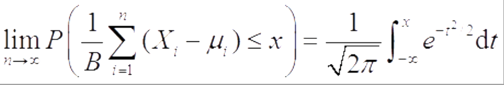
其中E（Xi）＝μi，σ（Yn）＝Bn．
4)李雅普诺夫中心极限定理
设{Xn}为独立随机变量序列，若存在δ＞0，满足
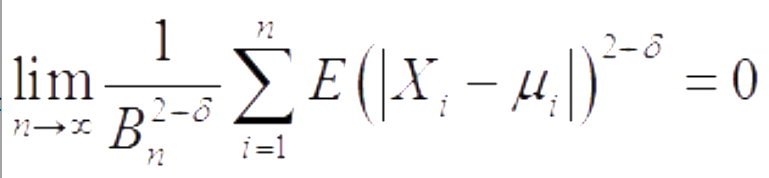
则对任意的x，有
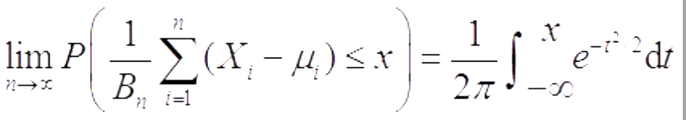
其中μi与Bn如前所述．